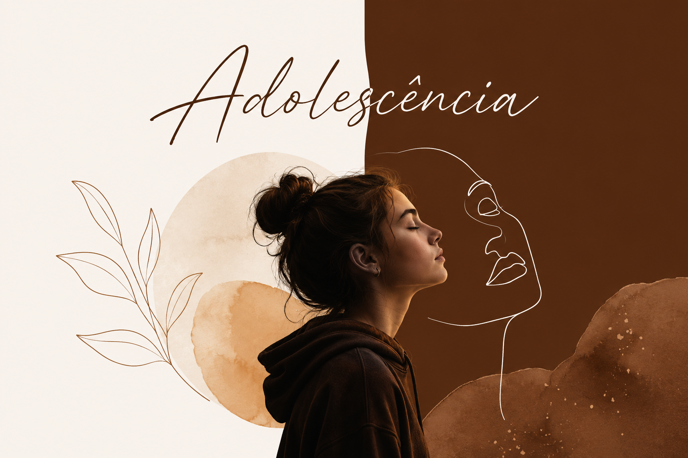

Gestalt-Terapia
Gestalt-Terapia
O que é Gestalt-Terapia e como funciona uma sessão na prática
A Gestalt-Terapia é, antes de qualquer técnica, uma forma de acolher. Entenda o que é essa abordagem, de onde vem a palavra e o que costuma acontecer dentro de uma sessão.
Ler artigo Ansiedade
Ansiedade
Ansiedade na perspectiva da Gestalt-Terapia
A ansiedade é vitalidade represada. A Gestalt não a trata como inimiga a silenciar, mas como um sinal de energia que ficou sem caminho.
Ler artigo RPG Terapêutico
RPG Terapêutico
O que é RPG Terapêutico e como ele funciona em uma sessão
O jogo cria uma distância segura para falar sobre o que é difícil de dizer diretamente. Entenda como esse recurso clínico é usado dentro da psicoterapia.
Ler artigo Relacionamentos
Relacionamentos
Gestalt-Terapia e relacionamentos: o espaço entre duas pessoas
A Gestalt não pergunta só o que há de errado com você ou com o outro. Ela olha para o que se passa entre vocês — e para a qualidade desse contato.
Ler artigo
AdolescênciaAdolescência e Gestalt-Terapia: acompanhar quem está se tornando
A adolescência não é um problema a ser resolvido. É um intenso processo de transformação — e a Gestalt acompanha esse movimento com respeito e cuidado.
Ler artigo Gestalt-Terapia
Gestalt-Terapia
Gestalt-Terapia e TCC: técnicas que viram experimento
Na Gestalt, nada se aplica — tudo se experimenta. Veja como recursos da TCC podem entrar numa prática gestaltítica sem que a abordagem perca sua alma.
Ler artigo